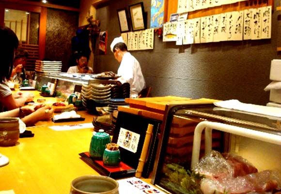

Sushimaru(鮨丸)
Blue Bottle Coffee
Toraya cafe an
stand
東京大人味發見
Day4-2015.07.26
< 淺 草、銀 座、葛 飾 區>
最後一天當然要吃好吃的握壽司，而且這裡離新宿車站也還蠻近的 。
店名：Sushimaru(鮨丸)
營業時間：月曜日-金曜日11:30-14:00 17:00-23:30
土曜日11:30-23:00；日曜日11:30-22:00
住址：東京都新宿區新宿 3-31-6
網址：無

back